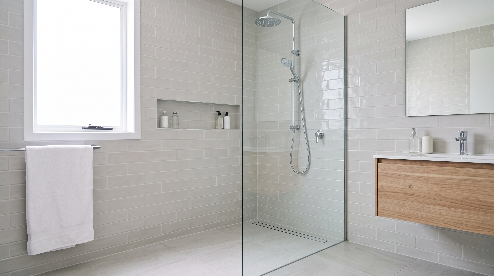
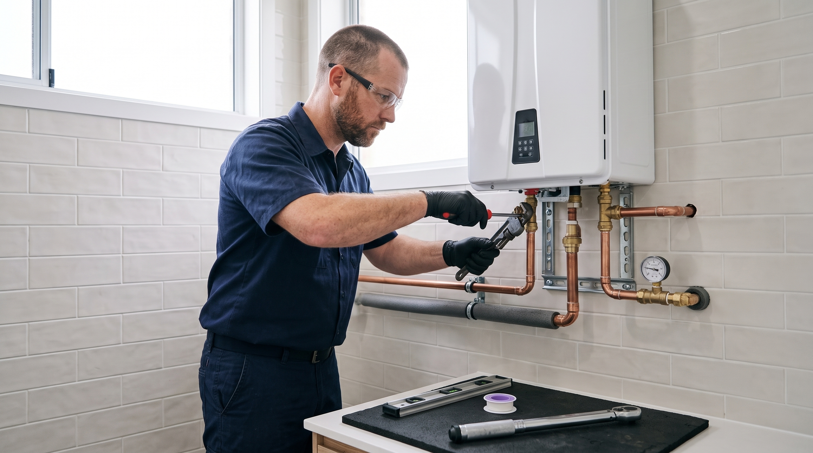

Reparamos fugas, desatascamos tuberías, instalamos calentadores y reformamos baños y cocinas. Más de 35 años de experiencia resolviendo cualquier problema de fontanería con rapidez y garantía.
Las averías no avisan. Una tubería rota a medianoche, un desbordamiento en fin de semana o una caldera que deja de funcionar en pleno invierno no pueden esperar. Estamos disponibles las 24 horas, los 365 días del año, sin recargos ocultos.
Resolvemos cualquier avería de fontanería en el momento justo, con la rapidez que la situación requiere. Llegamos preparados para diagnosticar y actuar desde el primer momento.
24 horas al día, 7 días a la semana, incluidos festivos. No hay horario de cierre ni días de descanso cuando se trata de proteger tu hogar o negocio.
Un solo clic desde tu móvil y estás en contacto directo con nosotros. Llamada, WhatsApp o formulario: elige cómo prefieres avisarnos y actuamos de inmediato.
Desde una pequeña reparación doméstica hasta la instalación completa de una vivienda nueva, cubrimos todas las necesidades de fontanería con el mismo nivel de profesionalidad y atención al detalle.
Localizamos y reparamos fugas, goteras y roturas de tuberías con precisión. Tecnología de detección para minimizar daños y garantizar una solución duradera.
Desatasco de desagües, bajantes y arquetas en viviendas, locales y comunidades. Equipos de alta presión para eliminar obstrucciones sin dañar las instalaciones.
Instalación, mantenimiento y reparación de calentadores, termos eléctricos y calderas de gas. Trabajamos con todas las marcas y modelos del mercado.
Reformas completas con acabados de alta calidad. Coordinamos fontanería, alicatado y acabados para ofrecerte un resultado final impecable y a medida.
Si estás construyendo de cero o renovando una instalación antigua, necesitas un profesional que conozca la normativa vigente y garantice un trabajo seguro y eficiente.

El Código Técnico de la Edificación establece los requisitos mínimos de seguridad, habitabilidad y eficiencia energética que deben cumplir todas las instalaciones.
Una instalación no conforme puede suponer riesgos para la salud, problemas legales y la invalidación de seguros del hogar.
Al contratar a un instalador autorizado, tienes la garantía de que tu instalación cumple toda la normativa vigente y cuentas con la documentación oficial necesaria para futuras ventas, alquileres o inspecciones.
Somos un servicio técnico de proximidad con conocimiento profundo de la zona. Conocemos las instalaciones típicas de la región y los problemas más frecuentes, lo que nos permite actuar con mayor rapidez y precisión.
Rapidez garantizada en Ceutí y municipios limítrofes. Al estar ubicados en la zona, nuestros tiempos de respuesta son significativamente menores.
Trabajamos con particulares, comunidades de vecinos, oficinas y empresas. Cada cliente recibe un trato adaptado a sus necesidades, con presupuestos claros y sin letra pequeña.
Gestionamos nuestras visitas de forma eficiente para asegurar la puntualidad en cada intervención. Avisamos con antelación y cumplimos los horarios acordados.
Todos nuestros presupuestos son detallados, claros y sin sorpresas. Antes de comenzar cualquier trabajo, te explicamos exactamente qué se va a hacer, qué materiales se van a utilizar y cuál es el coste total.
Cada presupuesto incluye la separación clara de materiales y mano de obra. Sabrás exactamente en qué se invierte cada euro antes de dar el visto bueno.
Tarifas adaptadas a cada necesidad y tipo de trabajo. Ofrecemos precios justos y competitivos sin sacrificar la calidad de los materiales ni la profesionalidad del servicio.
Todas nuestras instalaciones y reparaciones cuentan con una garantía mínima de 2 años. Si algo falla dentro del período de garantía, lo solucionamos sin coste adicional.
En Fontanero Ceutí no somos una macroempresa impersonal. Somos profesionales locales con vocación de servicio, colegiados y con carné de instalador autorizado.
Cada trabajo que realizamos lo hacemos como si fuera para nuestra propia casa: con cuidado, limpieza y atención al detalle. Con más de 35 años de experiencia en fontanería industrial, averías y reformas, conocemos cada tipo de instalación y sabemos cómo resolver cualquier problema de la forma más eficiente.
Utilizamos exclusivamente herramientas de precisión y materiales homologados de primeras marcas. Esto garantiza que cada instalación sea segura, duradera y cumpla con la normativa vigente.
Carné de instalador autorizado y seguro de responsabilidad civil activo.
Protegemos tus espacios y dejamos todo impecable al finalizar.
Solo trabajamos con materiales de calidad certificada y garantía de fabricante.

Resolvemos tus dudas más comunes sobre fontanería. Si no encuentras la respuesta que buscas, llámanos o escríbenos sin compromiso.
Lo primero y más importante: cierra la llave general de paso para cortar el suministro de agua y evitar que el daño se extienda. Después, intenta recoger el agua con cubos o toallas para proteger muebles y suelos. No intentes reparar la tubería tú mismo si no tienes experiencia, ya que podrías empeorar la situación. Llámanos al 622 749 896 y acudiremos lo antes posible.
La llave general de paso suele estar en la entrada de la vivienda, dentro de un armario de contadores, en la cocina o en el baño principal. En viviendas antiguas puede estar en la fachada exterior o en el cuarto de contadores de la comunidad. Para cerrarla, gírala en el sentido de las agujas del reloj hasta que no gire más. Consejo importante: prueba a abrirla y cerrarla de vez en cuando para que no se agarrote. Si no sabes dónde está, llámanos y te ayudamos a localizarla.
Se recomienda hacer una revisión anual, especialmente antes del invierno. Esto incluye comprobar la llama, limpiar el quemador, verificar el tiro de gases y revisar el estado del ánodo de magnesio en termos eléctricos. Un mantenimiento regular alarga la vida útil del aparato, previene averías costosas y, lo más importante, garantiza tu seguridad frente a fugas de gas o monóxido de carbono.
Los atascos más comunes se producen por acumulación de grasa, restos de comida, pelo y jabón en las tuberías. Para prevenirlos: usa rejillas en los desagües de ducha y fregadero, nunca tires grasa por el fregadero (recógela en un bote y tírala a la basura), y de vez en cuando vierte agua muy caliente por los desagües para disolver la grasa acumulada. Si el atasco persiste, no fuerces: llámanos y lo solucionamos con equipos profesionales sin dañar tus tuberías.
No lo recomendamos. Los desatascadores químicos son agresivos y pueden dañar las tuberías, especialmente las de PVC y las juntas de goma. Además, si no resuelven el atasco, dificultan el trabajo posterior del fontanero al crear un entorno peligroso con salpicaduras de ácido. Como alternativa casera, puedes probar con una mezcla de bicarbonato y vinagre seguida de agua caliente. Pero si el problema persiste, lo más seguro y efectivo es llamar a un profesional.
El coste depende del tipo de trabajo, los materiales necesarios y la urgencia. En Fontanero Ceutí ofrecemos presupuestos sin compromiso antes de empezar cualquier intervención, con desglose detallado de mano de obra y materiales. No tenemos cargos ocultos ni sorpresas. Llámanos al 622 749 896 o rellena nuestro formulario de contacto para una valoración personalizada.
Al ser un servicio local de Ceutí, nuestros tiempos de respuesta son muy cortos. En situaciones de urgencia dentro de Ceutí y localidades cercanas como Molina de Segura, nos desplazamos lo más rápido posible. Llámanos al 622 749 896 y mientras llegamos, te guiaremos por teléfono para que puedas tomar las primeras medidas y minimizar los daños.
Sí, estamos disponibles los 365 días del año, incluidos fines de semana y festivos. Las averías no entienden de horarios, y nosotros tampoco. Nuestro servicio de urgencias funciona las 24 horas, así que puedes llamarnos cuando lo necesites sin importar el día o la hora.
Cuando tienes una avería, cada minuto cuenta. Elige la opción que más te convenga y nos pondremos en marcha de inmediato.
Habla con un profesional sin esperas ni contestadores automáticos.
622 749 896Envíanos fotos o vídeos de la avería para una valoración previa. Respuesta en menos de 30 minutos.
Abrir WhatsAppCeutí, Molina de Segura, Fortuna, Beniel, Murcia capital y pedanías cercanas.
No dejes que una avería de fontanería altere tu día a día. Somos tu fontanero de confianza en Ceutí, disponible en un solo clic o una llamada.